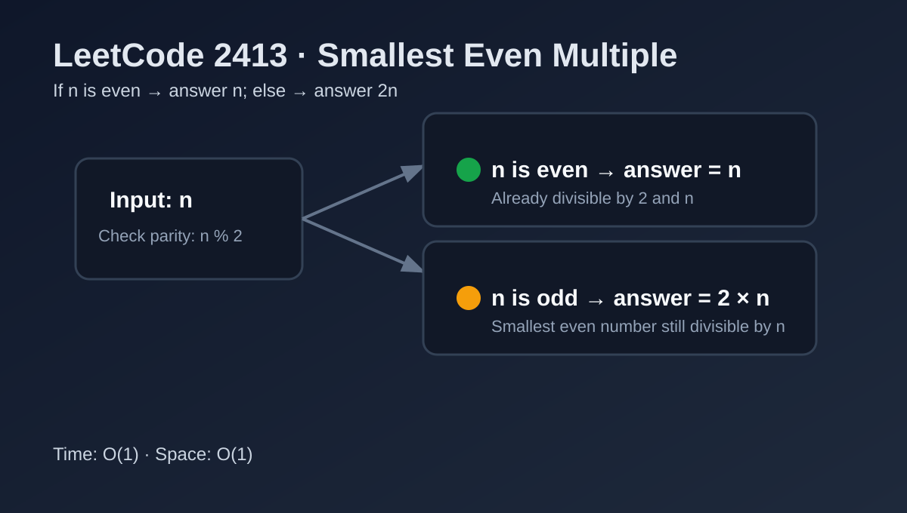

LeetCode 2413: Smallest Even Multiple (Parity-Based Constant-Time Math)
LeetCode 2413MathParityToday we solve LeetCode 2413 - Smallest Even Multiple.
Source: https://leetcode.com/problems/smallest-even-multiple/

English
Problem Summary
Given a positive integer n, return the smallest positive integer that is a multiple of both n and 2.
Key Insight
If n is already even, then n itself is divisible by 2, so the answer is n. If n is odd, multiplying by 2 is the smallest way to make it even and still divisible by n, so answer is 2n.
Brute Force and Limitations
You could iterate multiples of n until finding an even one, but that is unnecessary work because parity tells the answer directly.
Optimal Algorithm Steps
1) Check whether n % 2 == 0.
2) If true, return n.
3) Otherwise, return 2 * n.
Complexity Analysis
Time: O(1).
Space: O(1).
Common Pitfalls
- Over-engineering with loops or LCM formulas for this tiny parity case.
- Forgetting that odd n itself cannot be even, so answer must be doubled.
Reference Implementations (Java / Go / C++ / Python / JavaScript)
class Solution {
public int smallestEvenMultiple(int n) {
return (n % 2 == 0) ? n : 2 * n;
}
}func smallestEvenMultiple(n int) int {
if n%2 == 0 {
return n
}
return 2 * n
}class Solution {
public:
int smallestEvenMultiple(int n) {
return (n % 2 == 0) ? n : 2 * n;
}
};class Solution:
def smallestEvenMultiple(self, n: int) -> int:
return n if n % 2 == 0 else 2 * nvar smallestEvenMultiple = function(n) {
return n % 2 === 0 ? n : 2 * n;
};中文
题目概述
给定正整数 n，返回同时是 n 和 2 的最小正整数倍数。
核心思路
看奇偶性即可：如果 n 是偶数，n 本身就满足条件；如果 n 是奇数，最小满足条件的数就是 2n。
暴力解法与不足
可以从 n, 2n, 3n... 逐个试到偶数，但这是多余计算；奇偶性已经直接决定答案。
最优算法步骤
1）判断 n % 2 == 0。
2）若为真，返回 n。
3）否则返回 2 * n。
复杂度分析
时间复杂度：O(1)。
空间复杂度：O(1)。
常见陷阱
- 使用循环或复杂最小公倍数公式，导致实现冗长。
- 忽略奇数不可能本身为偶数这一点。
多语言参考实现（Java / Go / C++ / Python / JavaScript）
class Solution {
public int smallestEvenMultiple(int n) {
return (n % 2 == 0) ? n : 2 * n;
}
}func smallestEvenMultiple(n int) int {
if n%2 == 0 {
return n
}
return 2 * n
}class Solution {
public:
int smallestEvenMultiple(int n) {
return (n % 2 == 0) ? n : 2 * n;
}
};class Solution:
def smallestEvenMultiple(self, n: int) -> int:
return n if n % 2 == 0 else 2 * nvar smallestEvenMultiple = function(n) {
return n % 2 === 0 ? n : 2 * n;
};
Comments